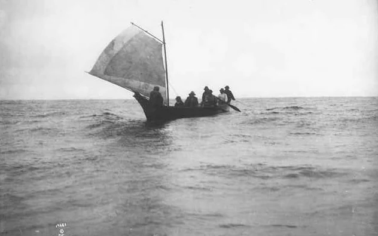
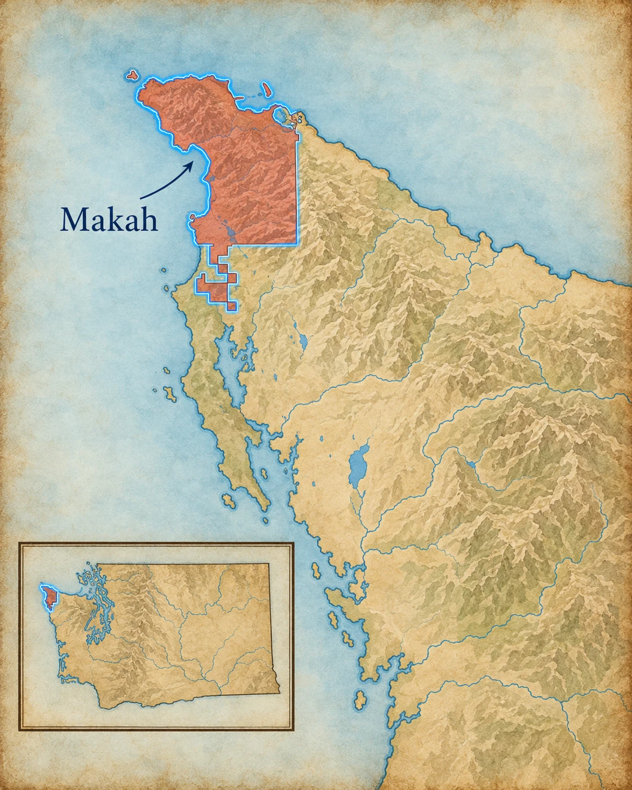
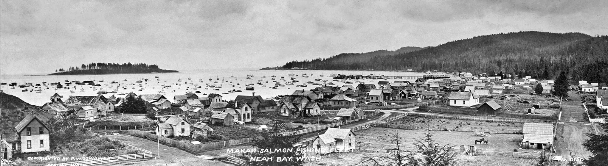
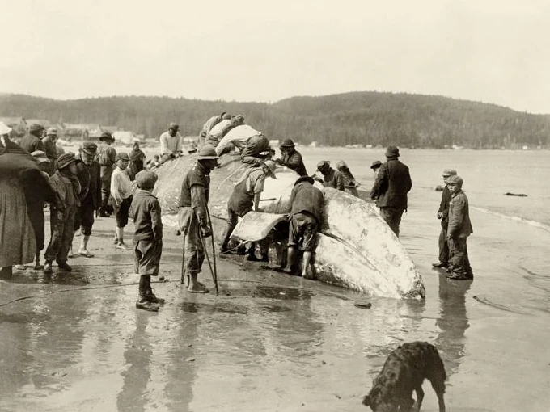
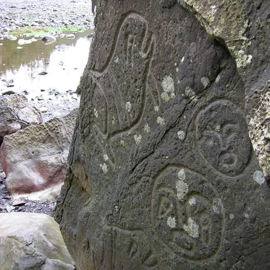
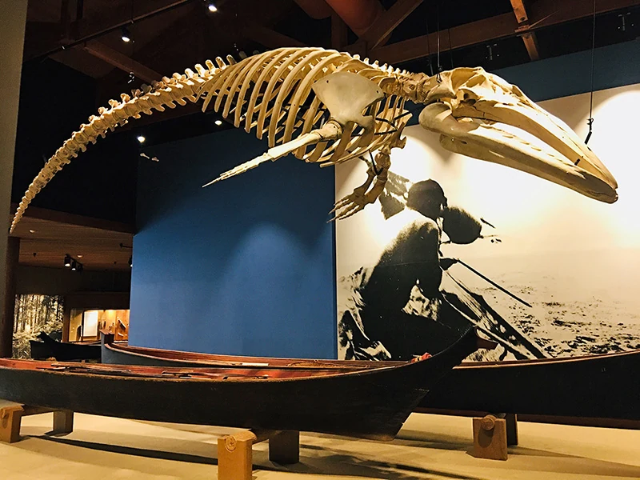
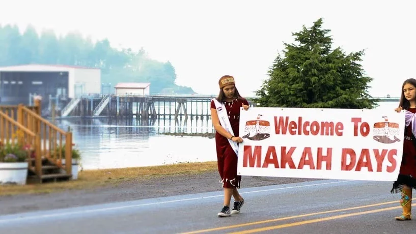

Ocean-going canoes
Makah canoe design had to handle surf, offshore swells, cargo, fishing, and sea-mammal hunting. Some large whaling canoes reached about thirty feet in length.
The Makah—qʷidiččaʔa·tx̌—live at the northwestern tip of the Olympic Peninsula, where the Strait of Juan de Fuca meets the Pacific Ocean. Their history revolves around the sea and land: whaling, fishing, sealing, canoe travel, cedar work, villages, family-owned songs and stories, and a deep knowledge of dangerous coastal waters.


The Makah were never simply “people who hunted whales.” Whaling belonged to a much larger maritime system of fishing, canoe technology, family rights, ceremony, trade, and ocean knowledge.
Neah Bay and Cape Flattery sit beside some of the most challenging water on the Northwest Coast. Currents, swells, reefs, storms, and fog made seafaring dangerous—but also made ocean knowledge extraordinarily valuable.
The Makah homeland occupies a strategic meeting place between the open Pacific and the Strait of Juan de Fuca. From villages around Neah Bay and Cape Flattery, canoe crews could reach fishing grounds, offshore islands, beaches, and communities farther along the coast or inside the Strait.
Makah spoken history and tribal sources describe five principal winter villages. Seasonal camps placed families closer to fishing grounds, whaling areas, shellfish beaches, berry sites, and other resources. This was not wandering without a home. Families moved through a well-known homeland and returned to established villages.



Makah whaling traditions extend back many centuries. A successful hunt depended on a trained crew, specialized harpoons, strong canoes, navigation, preparation, and community knowledge. Whale meat and oil provided food; bone, sinew, and other materials had practical uses. Songs, designs, ceremony, and family histories also grew around whaling.
Makah tribal sources describe whalers preparing for weeks or months through training, prayer, fasting, ceremonial bathing, and repeated practice. Once at sea, crews watched weather, ocean conditions, and a whale's breathing pattern. The harpooner and paddlers each had specialized jobs, and everyone had to react together in dangerous water.
The 1855 Treaty of Neah Bay explicitly secured Makah rights to fish, whale, and seal at usual and accustomed grounds. Commercial whaling by non-Native fleets later devastated whale populations and helped interrupt Makah hunting in the twentieth century. The treaty right remained.
Whaling therefore was never only the dramatic moment of striking a whale. It depended on technology, discipline, spiritual preparation, inherited knowledge, and the work of families and community members before and after a hunt.
Makah sources describe different canoes built for different jobs: whaling, halibut fishing, salmon fishing, sealing, warfare, cargo carrying, and even smaller practice canoes for children. A canoe was designed around what it needed to do on the water.
Makah canoe design had to handle surf, offshore swells, cargo, fishing, and sea-mammal hunting. Some large whaling canoes reached about thirty feet in length.
Western red cedar supplied houses, canoes, carvings, boxes, bark fiber, and many everyday tools. Canoe makers could steam a hollowed log so its sides could be spread wider without weakening the wood.
Makah tribal sources explain that some songs, dances, and stories belong to particular families and are performed through those rights. Cultural knowledge could be inherited and protected just as physical property could be.
Safe travel depended on observation as much as construction. Makah mariners read wind, sky, stars, swells, tide rips, landmarks, and even the sounds of waves breaking on different shorelines.

Around 300–500 years ago, mudslides buried part of the Makah village of Ozette. Waterlogged soil sealed away wood, fiber, basketry, tools, house remains, and other materials that normally decay.
When erosion exposed the site in the twentieth century, Makah people and archaeologists worked together during a long excavation. More than 50,000 artifacts were recovered. The finds preserved details of everyday life that are almost never visible at dry archaeological sites.
That matters because ordinary objects can answer questions that outside written accounts cannot. Canoe parts, baskets, cordage, fishing equipment, household tools, and pieces of houses reveal how people worked, stored food, traveled, and organized daily life.
Many artifacts are now cared for and interpreted by the Makah Cultural and Research Center in Neah Bay.
Archaeology often preserves stone and bone better than wood, cloth, rope, baskets, or food containers. Ozette reversed that problem. Mud preserved fragile materials—sometimes even woodcarving debris and pieces of cordage.
That means students can ask unusually specific questions: What did a household store? How were baskets made? What fishing tools were nearby? How was a longhouse organized? Archaeology becomes evidence about people, not just a pile of “artifacts.”

The Makah Museum houses and interprets artifacts from the Ozette Archaeological Site alongside historic and replica objects. Its exhibits include whaling and fishing gear, basketry, a full-size longhouse replica, and canoes—presented by the Makah Tribe in its own community.
That location matters. Objects recovered from Ozette did not simply disappear into a distant museum collection. They are cared for in Neah Bay, where Makah families, students, researchers, and visitors can connect archaeological evidence with Makah history and living community knowledge.
The center opened in 1979 and continues to preserve material from Ozette while also documenting Makah culture beyond the archaeological site.
Explore the Makah Museum →The Makah Tribe is a sovereign nation headquartered at Neah Bay. Fishing, natural-resource management, art, language, canoe journeys, Makah Days, and family traditions continue alongside schools, businesses, public services, and modern careers.
Makah Days is a major community celebration that brings together cultural events, canoe races, games, performances, food, and visitors in Neah Bay. Events like it make an important point for this entire unit: Makah culture belongs to the present, not only to archaeology or nineteenth-century photographs.
Whaling remains culturally important, but it is also governed today through treaty rights and federal wildlife law. That modern legal framework is part of the continuing story of Makah sovereignty and the ocean.


Why can a preserved village like Ozette tell us things that written accounts from outsiders cannot?